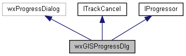
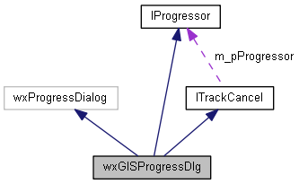
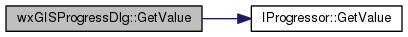
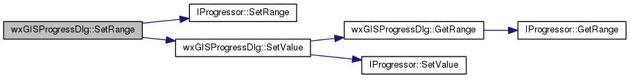
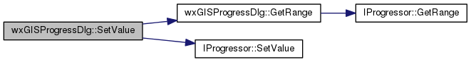
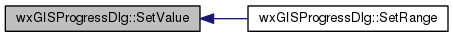
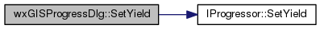

|
|
Version: 0.6.0 |


wxGISProgressDlg Class Reference
#include <progressdlg.h>
Inheritance diagram for wxGISProgressDlg:

Collaboration diagram for wxGISProgressDlg:

Public Member Functions | |
| wxGISProgressDlg (const wxString &title, const wxString &message, int maximum=100, wxWindow *parent=NULL, int style=wxCAPTION) | |
| virtual bool | ShowProgress (bool bShow=true) |
| Show/hide progressor. More... | |
| virtual void | SetRange (int range) |
| Set progressor range. More... | |
| virtual int | GetRange (void) const |
| Set progressor range. More... | |
| virtual void | SetValue (int value) |
| Set progressor position. More... | |
| virtual int | GetValue (void) const |
| Get progressor position. More... | |
| virtual void | Play (void) |
| Start undefined progressor state. | |
| virtual void | Stop (void) |
| Stop undefined progressor state. | |
| virtual void | SetYield (bool bYield=false) |
| SetYield Yields control to pending messages in the windowing system. More... | |
| virtual void | Cancel (void) |
| virtual bool | Continue (void) |
| virtual void | Reset (void) |
| virtual void | PutMessage (const wxString &sMessage, size_t nIndex=wxNOT_FOUND, wxGISEnumMessageType eType=enumGISMessageUnk) |
| virtual wxString | GetLastMessage (void) const |
| virtual void | SetAddPercentToMessage (bool bAdd=false) |
| virtual size_t | GetWarningCount () const |
| virtual const wxVector< MESSAGE > & | GetWarnings () const |
| virtual void | OnCancel (wxCommandEvent &event) |
 Public Member Functions inherited from ITrackCancel Public Member Functions inherited from ITrackCancel | |
| ITrackCancel (void) | |
| A constructor. | |
| virtual | ~ITrackCancel (void) |
| A destructor. | |
| virtual IProgressor *const | GetProgressor (void) |
| virtual void | SetProgressor (IProgressor *pProgressor) |
| virtual wxString | GetLastMessage (void) |
| Public Member Functions inherited from IProgressor | |
| virtual | ~IProgressor (void) |
| A destructor. | |
Protected Attributes | |
| wxButton * | m_sdbSizerCancel |
| wxStdDialogButtonSizer * | m_sdbSizer |
| wxStaticText * | m_staticElapsedText |
| IProgressor * | m_pProgressBar |
| wxStaticText * | m_staticText |
| wxString | m_sLastMessage |
| bool | m_bAddPercentToMessage |
| wxVector< MESSAGE > | m_saWarnings |
| wxDateTime | m_dtStart |
| int | m_nPrevDone |
| Protected Attributes inherited from ITrackCancel | |
| bool | m_bIsCanceled |
| IProgressor * | m_pProgressor |
Detailed Description
The dialog showing progress and some buttons.
Library: wxGISFramework
Member Function Documentation
|
virtual |
Set progressor range.
- Returns
- The current progressor range
Implements IProgressor.
Here is the call graph for this function:
Here is the caller graph for this function:

|
virtual |
Get progressor position.
- Returns
- The current progressor position
Implements IProgressor.
Here is the call graph for this function:

|
virtual |
Set progressor range.
- Parameters
-
range The progressor value range
Implements IProgressor.
Here is the call graph for this function:

|
virtual |
Set progressor position.
- Parameters
-
value The progressor current value
Implements IProgressor.
Here is the call graph for this function:

Here is the caller graph for this function:

|
virtual |
SetYield Yields control to pending messages in the windowing system.
This can be useful, for example, when a time-consuming process writes to a text window. Without an occasional yield, the text window will not be updated properly, and other processes will not respond.
Implements IProgressor.
Here is the call graph for this function:

|
virtual |
Show/hide progressor.
- Parameters
-
bShow The indicator to show (true) or hide (false) progressor
- Returns
- The success of function execution
Implements IProgressor.
The documentation for this class was generated from the following files:
- /home/bishop/work/projects/nextgismanager/include/wxgis/framework/progressdlg.h
- /home/bishop/work/projects/nextgismanager/src/framework/progressdlg.cpp
- Generated on Fri Sep 26 2014 01:11:02 for ngm by
 1.8.6
1.8.6